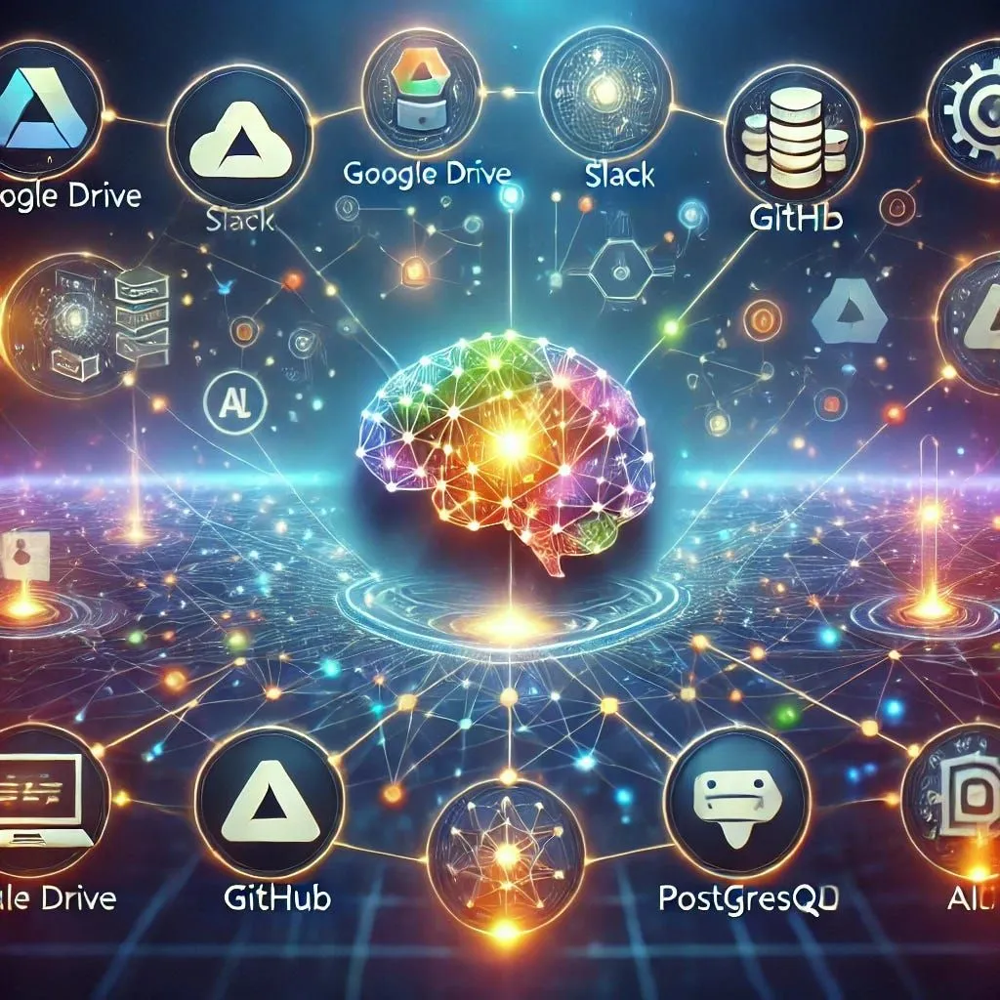

MCP is how AI talks to software
Originally posted on LinkedIn, April 6, 2025.
MCP (Model Context Protocol) is the shared standard that lets AI models invoke tools, APIs, and UIs like HTTP did for the web.
MCP—Model Context Protocol—is positioned as the common layer for AI access to software, analogous to HTTP for the web. Models do not natively know actions like send an email or book an appointment; MCP describes available actions, formats, and effects so they can call APIs, UIs, and services. Companies adopt MCP so existing product capabilities become actions AI can understand and use.
To understand MCP, think about how the internet started. Computers needed a shared language to communicate with remote servers, which led to HTTP. Today that protocol is mostly invisible. We open a browser and visit websites without thinking about the agreed global infrastructure that transfers the data to our computers.
The same thing is now happening with AI. This time, we are not the ones who need to know how to communicate. The AI does.
GPT does not inherently know what “send an email” or “book an appointment” means. Someone has to explain what actions are available, what language and format to use, and what will happen when an action is triggered.
That is what MCP, or model context protocol, does. It is a shared protocol that companies are gradually adopting as the way to teach AI how to communicate with systems, services, buttons, menus, and everything else.
Making that work is not simple. It requires translating an API into a language a machine can understand. Every online service that wants to be accessible to AI needs to provide this kind of access through an MCP server.
We have moved from product people writing documentation for developers to developers writing documentation for AI. It sounds strange, but that is where we are. We are mapping every service an AI can use and every way it can access other systems, so it can perform operations for us with “one command.”
Just as we needed protocols such as HTTP to browse the internet and view websites, we now need a new protocol that lets AI access digital services by itself. Someone has to map the technical, manual communication developers have worked with until now, including APIs, buttons, forms, and other interfaces, and turn it into a language AI can use.
This is the work of converting technical commands into machine-readable instructions. It requires:
- Explaining what the system can do
- Defining which actions are exposed through the API or UI
- Describing how to access them, including how to do it securely
- Writing clear English instructions for how the AI should use them
For example, if a button sends an email, the AI needs an instruction like this:
“To send an email, use the send_email action. Specify a recipient, subject, and body. The format must be JSON in the following structure.”
This is not exactly programming, and it is not ordinary documentation. It is a new language that connects the computer that thinks with the computer that executes. That is MCP.
This is the stage we are in now. Anyone who fails to understand it in time will be left out.

FAQ
- What is MCP?
- MCP stands for Model Context Protocol. It is a shared protocol so AI models can call APIs, UIs, and services with a common description of tools and outcomes.
- Why compare MCP to HTTP?
- The post compares MCP to AI-tool access what HTTP was to the web: a standard interface everyone can implement so systems interoperate.
- What problem does MCP solve for GPT and similar models?
- Models do not inherently know operational commands. MCP teaches what actions exist, how to format them, and what they do so software features become usable agent actions.